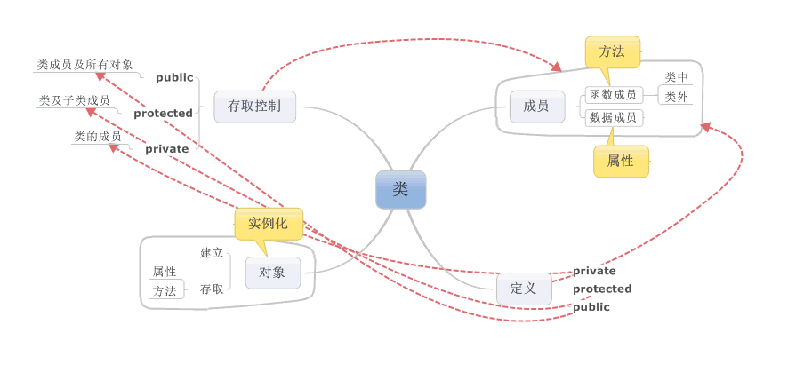
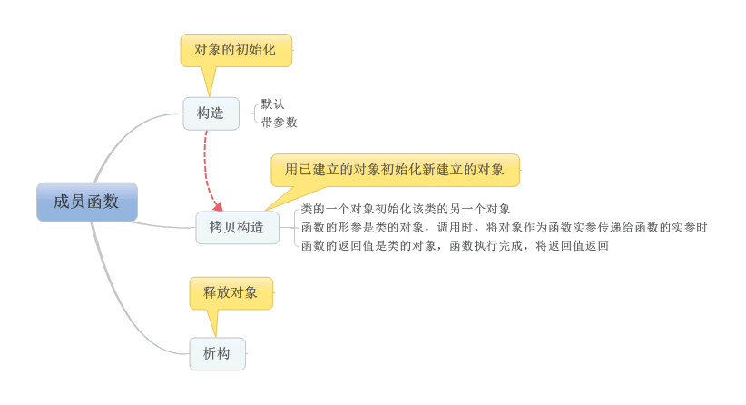
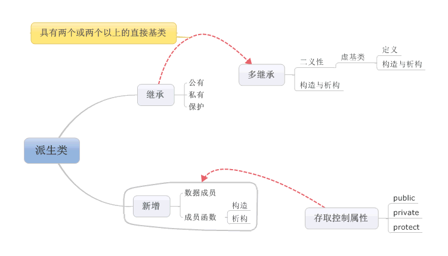
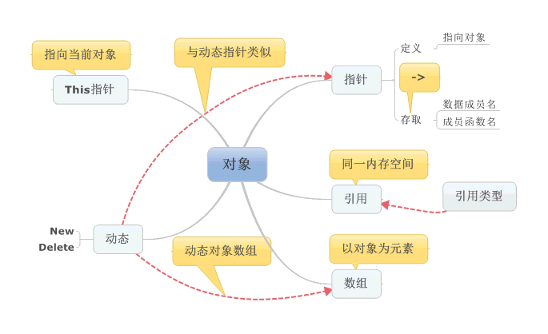
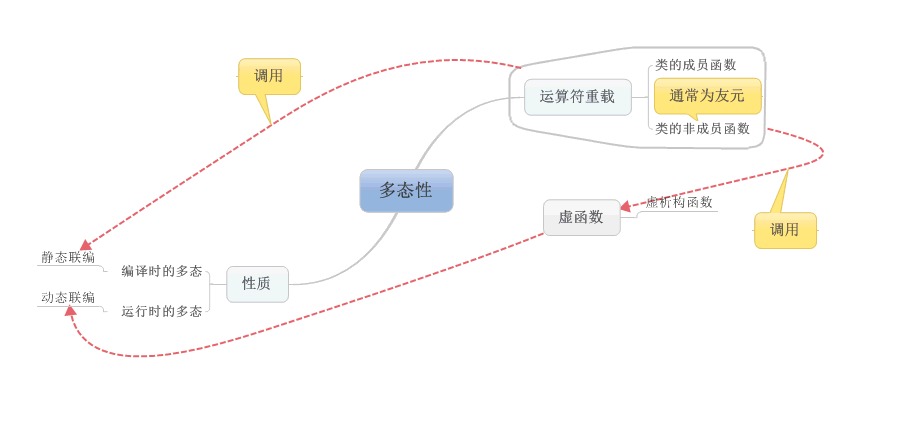

我们先来了解一下什么是类？
类是对逻辑上相关的函数与数据的封装
下面是我对类的总结：

认识一个类，就从它的成员开始：
类的成员有
1，数据成员——属性
2，成员函数——方法

类的成员函数主要是对类中的数据成员的操作
针对构造函数的默认与带参数一起来理解一下：
用构造函数赋初值有三种方式：
1，用构造函数在类内初始化
例如：
Clock(int h=0 ,int m=0,int s=0)
{
…...
}
例如：调用构造函数时不带有参数，即使用默认
Clock C4
2,在类外给构造函数传参数（实参传递）。
例：当执行：
Clockmyclock(9,30,45)
Myclock.showtime();
此时建立对象时调用了clock（9,30,45）
3，用构造函数初始化新建立的对象
Clock myclock=clock（9,30,45）
clock（9,30,45）是一个clock类型的常量
类的介绍差不多了，那么类与类的关系呢？——继承（子类继承父类）

那么我们定义类的作用是干什么呢？类是对象的实例化。如同模具与铸件之间的关系，下面一起来了解一下对象：

对象建立后，同样的消息被不同类型的对象接收时导致不同的行为 -多态即类与对象的关系

认识面向对象的整个过程，让我深刻的理解了这句话，不要制造相同的轮子，建立类的过程就是建立模型，避免重复，让我们的工作效率充分的发挥！学习上的总结（抽象类的过程）也是一样，树干有了，剩下的就是添枝加叶，这个过程也就是继承，多态呢就靠我们对知识的了解，然后灵活运用了。